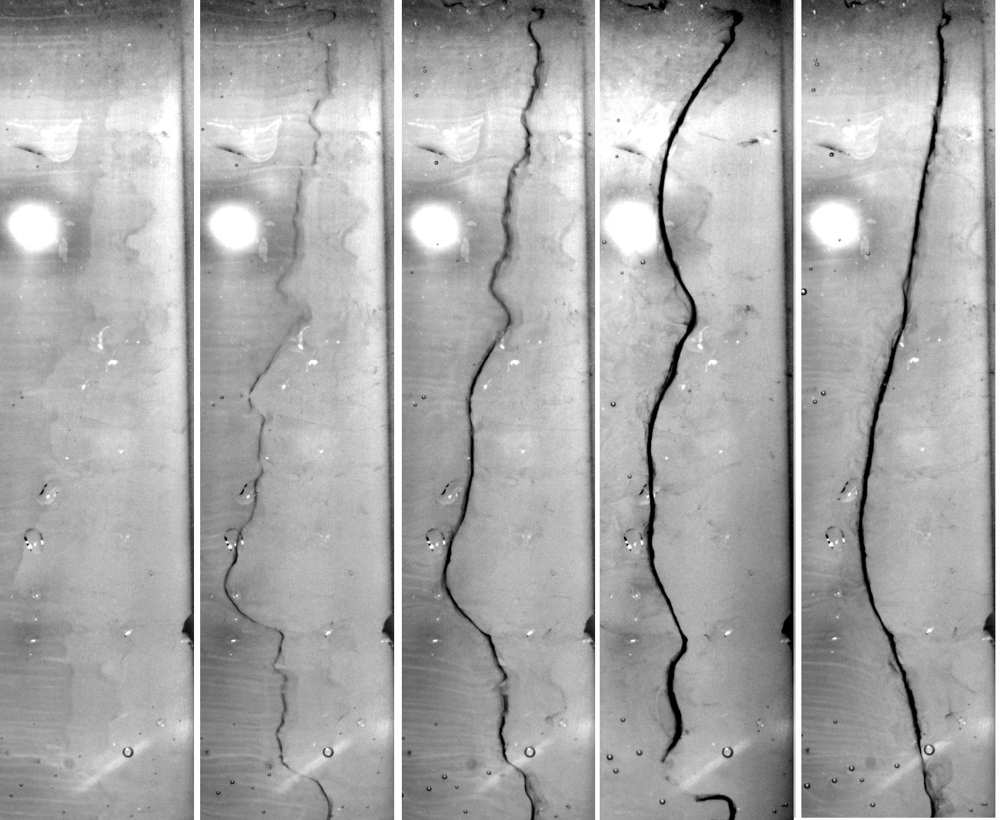

We experimentally and theoretically
examine two static means of mixing liquids in microchannels using electrokinetic
flow. A diffusive interface between two regions of unequal concentration
and conductivity is shown to be unstable to a normal electric field in
the direction of the lower conductivity. The resulting instability is analogous
to viscous fingering between miscible fluids and is analyzed with a special
spectral analysis of the self-similar diffusive front to provide conditions
for maximum fingering and mixing. An alternating transverse field provided
by a local electrode induces an oscillating non-uniform electrokinetic
velocity profile. The resulting Taylor dispersion is shown to effectively
mix slugs of reactants.
